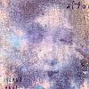

Celtic Lyrics Corner > Artists & Groups > Altan > Island Angel > The Jug Of Punch
|  | The Jug Of Punch |
| Credits : | Traditional; arranged by Altan |
| Appears On : | Island Angel ; The Best Of Altan ; Voices Of Celtic Women 2 (compilation) |
| Language : | English |
Lyrics :
Being on the twenty-third of June
Oh as I sat weaving all at my loom
Being on the twenty-third of June
Oh as I sat weaving all at my loom
I heard a thrush singing on yon bush
And the song she sang was the jug of punch
What more pleasure can a boy desire
Than sitting down, oh beside the fire
What more pleasure can a boy desire
Than sitting down, oh beside the fire
And in his hand, oh a jug of punch
And on his knee a tidy wench
When I am dead and left in my mold
At my head and feet place a flowing bowl
When I am dead and left in my mold
At my head and feet place a flowing bowl
And every young man that passes by
He can have a drink and remember I
Being on the twenty-third of June
Oh as I sat weaving all at my loom
Being on the twenty-third of June
Oh as I sat weaving all at my loom
I heard a thrush singing on yon bush
And the song she sang was the jug of punch